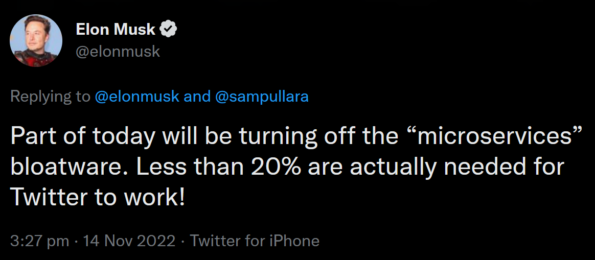

Benefits of dataflow modeling for data management in software systems
Andrei Paleyes
The Ocean Cleanup Challenge, December 2022
About
- PhD student at the University of Cambridge
- Researching ML for systems and systems for ML
- Over a decade of software engineering experience
- Including several years of deploying ML at Amazon
Shoutout to ML@CL group
 |
 |
||||
| Neil Lawrence | Eric Meissner | Markus Kaiser | Pierre Thodoroff | Jessica Montgomery | Christian Cabrera |
ML deployment is hard!
Venture Beat, 2019
“Why do 87% of data science projects never make it into production?”
InfoWorld, 2021
“85% of AI and machine learning projects fail to deliver, and only 53% of projects make it from prototypes to production.”
But why?
Many reasons
e.g. model accuracy vs business value
or computational and labour costs
or skillset
One more reason
Data management in modern software is often a mess
Scaling Big Data Mining Infrastructure: The Twitter Experience J Lin, D Ryaboy; ACM SIGKDD Explorations Newsletter, 2013
“Effective big data mining at scale doesn't begin or end with what academics would consider data mining”
“Data scientists expend a large amount of effort to understand the data available to them, before they even begin any meaningful analysis”
“Exploratory data analysis always reveals data quality issues”
Who's to blame?

Software Services
What is a service
A service is a piece of software,that provides a function, or many functions,
known as interface or API,
that clients* can reuse,
together with policies to control its usage.
*A client can be anything: another software, a person, a hardware.
https://en.wikipedia.org/wiki/Service_(systems_architecture)Service oriented architecture is
- Scalable
- Flexible
- Modular
- Reliable
- Encourages ownership
However...
Two services

Three services

Big ball of mud
 https://www.ben-morris.com/microservices-rest-and-the-distributed-big-ball-of-mud/
https://www.ben-morris.com/microservices-rest-and-the-distributed-big-ball-of-mud/
Scaling Big Data Mining Infrastructure: The Twitter Experience J Lin, D Ryaboy; ACM SIGKDD Explorations Newsletter, 2013
“Twitter is powered by many loosely-coordinated services.”
“Since a single user action may involve many services, a data scientist wishing to analyze user behavior must first identify all the disparate data sources involved.”
“Services are normally developed and operated by different teams, which may adopt different conventions for storing and organizing log data.”
What to do?
What to do?
Build software with data as the first priority!- Prioritise data while designing services - Götz et al., 2018
- Split data storage to encourage ownership - Data Meshes, Dehghani, 2019
- Cluster services by data domains - Domain-Oriented Microservice Architecture, Uber, 2020
Or... roll on dataflow!
Control flow vs data flow
Control flow is about operations and their orderData flow is about data routes and transformations
You are likely familiar with data flow already!
- Google Tensorflow
- Netflix Metaflow
- Node-RED
- Apache Spark
- Apache Beam
- Apache Kafka
- Spotify Luigi
- Sklearn pipelines
Flow-based programming
- Known since 1970s
- Data coupling - “loosest form of coupling”
- Software system as a data flow graph


Benefits of dataflow design
- Data oriented software
- Data discovery out of the box
- Data collection as simple as graph traversal
- Simple experimentation
- Enables causal reasoning, e.g. for monitoring
- Data lineage for security and compliance
Dataflow references
- NoFlo.js, https://noflojs.org/
- What the Hell Is Flow-Based Programming?, Julian Matschinske, Medium 2018
- An Empirical Evaluation of Flow Based Programming in the Machine Learning Deployment Context, Paleyes, Cabrera and Lawrence, CAIN 2022
- Assessing software privacy using the privacy flow-graph, Tang and Østvold, MSR4P&S 2022
- Falkirk Wheel: Rollback Recovery for Dataflow Systems, Isard and Abadi, SoCC 2021
- Flow-based programming, Paul J. Morrison, 1994.
- Position: GDPR compliance by construction, Schwarzkopf et al., DMAH 2019
- Milan: An evolution of data-oriented programming, Tom Borchert, 2020
- Decision provenance: Harnessing data flow for accountable systems, Singh, Cobbe and Norval, IEEE Access 2018
- Pathways: Asynchronous distributed dataflow for ML, Barham et al., MLSys 2022
Questions to dataflow design
- What is the infrastructure to use?
- Where are the tools?
- How to debug it?
- How much does it cost?
- How to monitor and alert it?
Summary
- Services are good
- But the world needs data as a priority
- Dataflow design may help
Reach out!
https://mlatcl.github.io/https://paleyes.info/
Email: ap2169 [at] cam.ac.uk